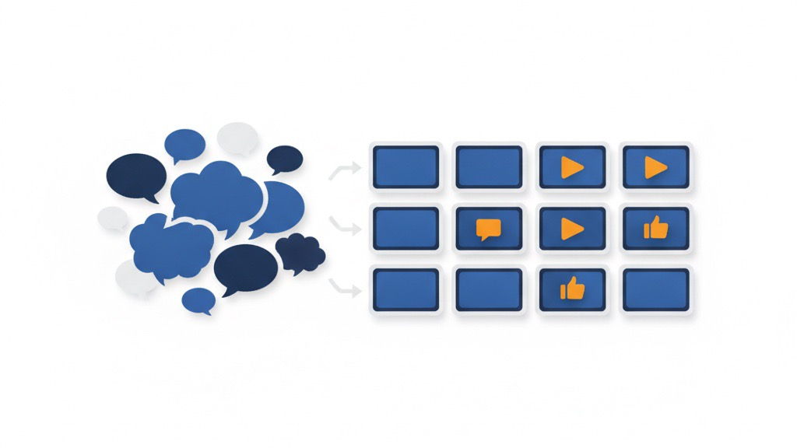

「いい商品だと思ってる」だけでは、伝わらない ——お客さまの声をそのままInstagram素材に変換する考え方
業務改善コラム ／ 集客・見える化 ／ 読了目安：約8分
「丁寧に書いたのに反応がない」——Instagramで商品紹介を続ける多くの方が感じる壁です。私が自社の香水販売事業で気づいたのは、自分で書いた言葉よりお客さまのひと言のほうが、何倍も人の目を止めるという事実でした。この記事では、その「声の力」をInstagramの画像素材に変換する流れと、毎日迷わず続けるための仕組みをお伝えします。
「自分で書いた投稿」が反応されない理由
Instagramで商品を紹介するとき、つい「こんな良いところがあります」「こんな方におすすめです」と自分の言葉で書いてしまいがちです。しかし、こうした投稿はほとんど反応されません。
読んでいる側には「売り手が言いたいことを言っている」と伝わってしまうからです。どれだけ丁寧な文章でも、発信者が自分の商品を褒めている時点で、受け取る側は少し距離を置いて読みます。
私自身、香水の小分け販売事業でInstagramを運用する中で同じ壁にぶつかりました。何度も書き直した紹介文よりも、お客さまが自然に書いてくれたひと言のほうが、はるかに多くの人の目を止めるのです。
声には「温度感」がある——作れないから借りる
「声の温度感は作れない、借りるしかない」——これは今週の作業を通じて改めて実感したことです。
たとえば「急がなくていい、このままゆっくり選んでいたい」「試してみたら想像以上だった」といった言葉は、売り手には絶対に書けません。実際に体験した人だけが持っている、あの「迷いながら選んでいる感覚」や「期待を超えた瞬間」が乗っているからです。
この温度感こそが、見た人の共感を引き出します。似たような状況にいる人が読んだとき、「これ、自分のことだ」と感じさせる力があります。
逆に言えば、この力は売り手がどれだけ頑張っても再現できません。だからこそ、お客さまの声をそのまま素材として使う仕組みを作ることに意味があります。

声を素材に変換する3ステップ
具体的にどう進めるのか、私が実際にやっている流れをご紹介します。
- ① 声を集める：購入後のレビューや、メッセージで届いた感想を記録します。評価の点数よりも「言葉の内容」を重視して保存します。「また買います」より「〇〇な気持ちになった」という具体的な言葉が素材として使えます。
- ② テーマを1行で決める：「急がなくていい気持ち」「試してみた正直な感想」など、その声が伝えているニュアンスを一言でまとめます。これが後の画像作りの軸になります。ここを曖昧にすると、6枚の画像がバラバラな印象になります。
- ③ 6枚の画像素材に展開する：テーマに沿って、表紙・エピソードの展開・まとめという構成で6枚の画像を作ります。Instagramは複数枚のスライド投稿ができるため、1テーマで6枚作っておくと1回の投稿として使えます。
この流れを1セットとして、毎日1テーマずつ進めることができます。
テーマを先に決めると毎日の迷いがなくなる
SNS投稿で多くの方が悩むのは「今日は何を投稿すればいいか分からない」という迷いです。ネタを考えることと、素材を作ることと、投稿することを毎日同時にやろうとすると、どこかで手が止まります。
テーマ単位で素材を事前に作っておくと、この迷いがほぼなくなります。「今日は声シリーズの3セット目を出す」と決めるだけで、投稿作業が始められます。
私の場合、今週は「急がなくていいという声」「試してみた声」「石鹸の香りの真実」「秋の入口」といった異なるテーマで毎日1セットを制作・記録しました。テーマが違えば同じ商品でも印象が変わり、7日間続けても内容が重複しません。
テーマは必ずしも「声」だけでなくても構いません。季節感、香りの特徴、よくある誤解など、お客さまが知りたいことを軸にすれば何でもテーマになります。ただし「声シリーズ」は作りやすく共感を得やすいため、他のテーマと交互に入れるのがおすすめです。
ファイル名と日付で管理する
作った画像素材は、テーマ名と制作日付をファイル名にして保存しています。たとえば「voices-tameshite-2026-08-20」のような形です。
この命名ルールのおかげで、「先月のあの声シリーズはいつ作ったか」「似たテーマを以前にも出していないか」がすぐに確認できます。
さらに、変更履歴を記録するツール（Gitと呼ばれる、何をいつ追加・修正したかを履歴として残す管理システム）で素材をまとめて管理しています。これにより「この週に追加した素材」「どのテーマが何枚あるか」を一覧で把握できるようになりました。
高価なツールや特別な知識は必要ありません。ファイル名に日付とテーマ名を入れ、フォルダで月ごとに整理するだけでも、かなり管理しやすくなります。「今日どのネタが残っているか」を数秒で確認できる状態を作ることが大切です。
7日間続けて見えてきたもの
毎日1テーマずつ、7日間素材を作り続けて気づいたことがあります。
お客さまの声を集めていくと、繰り返し出てくる言葉があります。「急いで決めなかった」「試してみたら思っていたのと違った（いい意味で）」——こうした言葉は、うちの商品を選ぶお客さまが何を大切にしているかを教えてくれています。
声を素材に変換し続けることは、コンテンツを作ることと同時に、顧客理解を深める作業でもあります。7日分の素材を並べて眺めると、「どんな言葉が共感を集めているか」という傾向が見えてきます。この傾向は、次の商品づくりや説明文の改善にも使えます。
自分で「すごい商品です」と書くよりも、お客さまの声を丁寧に拾って可視化していくほうが、長く続けられる投稿スタイルだと感じています。仕組みが整うと、投稿を「頑張って作るもの」から「すでにある素材を出す作業」に変えることができます。
お客さまの声をSNS素材に変える仕組み、一緒に考えます
「声の集め方が分からない」「素材に変換するやり方を聞いてみたい」——そんな段階から、LINEでメッセージをいただければお答えします。予約や電話は不要です。気軽に話しかけてください。
LINEで相談する